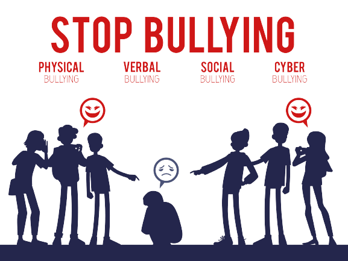

Talking to a professional counselor or therapist can help both the victim and the person doing the bullying. They can provide support and teach ways to deal with feelings and behaviors.
we can help you come in contact with counsellors who are certified in their proffession
Many organizations offer free, confidential phone services where people can talk about bullying and get advice. Examples include national anti-bullying hotlines or local support centers.
Many websites and social media platforms offer online spaces where people can connect, share their experiences, and support each other in dealing with bullying.
